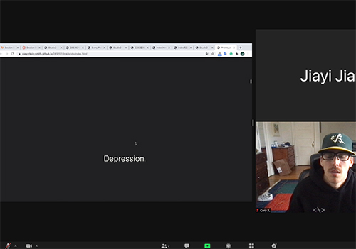
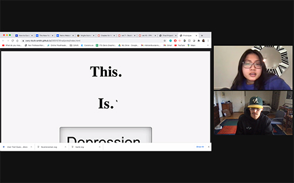
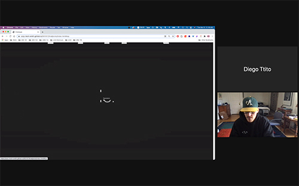
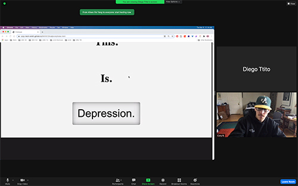

Test 1: Jaiyi

One of the first things noticed was a confusion as to whether or not
to scroll. The experience wasn't perceived as something that was
very fluid, in fact, it was very choppy, and suprise oriented. At
first, the scroll took Jaiyi a long time to figure out that you
could continue to scroll.
My Plans: \n I think one of the things I am going to do is firstly,
try and finish the project and get it to work properly. I want to
make the words a bit smaller on the horizontal scroll and make a max
width for the sentences that appear there as well.
Test 2: Mindy

Mindy picked up the scrolling right away, but seemed a bit
frustrated with the length of how long it takes you to scroll to get
to the vertical shift. Because of some of the wonkiness and
incompleteness of the project, text would appear randomly that was
out of sequence and confused the user with what they were supposed
to be doing. She also immediately started scrolling and when going
back, did the same thing, not registering or clicking the button at
all.
My Plans: \n I think one of the things I am going to do is shorten
up the scroll. There is a massively excessive scroll beneath the
last portion of the site. I think I am also going to shift down the
size of the text and perhaps rearrange the way the text location is
placed coming at you and perhaps even add some more text boxes that
are coming at the user.
Test 3: Diego

Diego clicked the button, and also seemed a bit confused with how
long the scroll was on the word depression. I think the overall
incompleteness of the work also created more confusion as there was
text where there wasn't supposed to be, and the final page, the
button wasn't very intuitive, and when clicked, it left digital
clutter behind.

My Plans: \n I think I am going to shorten the scroll on the word
depression and tighten that up. I'd like to try to figure out how to
make the left behind overlays to disappear when scrolling back out.
I may have to redesign and have an additional overaly pop up
instead.